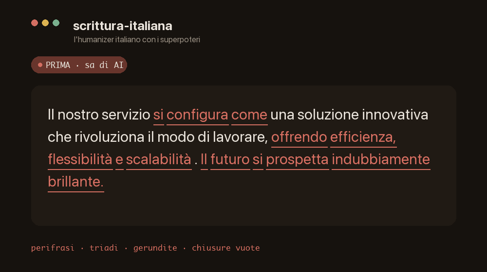

Claude Agent Skill · italiano · v2.8.0
l'humanizer italiano con i superpoteri
Incolli un testo che «sa di AI» e te lo restituisce umano — via perifrasi, gerundite, triadi, avverbi in -mente, trattini lunghi, frasi fatte. E già che c'è lo scrive giusto: punteggiatura, tipografia, registro, ritmo, retorica. Non un trova-e-sostituisci: sa l'italiano.
$ npx skills add hypnosdesign/claude-skill-scrittura-italiana
Prima → dopo
Un testo «vivente», «cruciale» e «indubbiamente brillante» diventa fatti concreti, frasi spezzate, una voce.

Il nuovo museo si configura come una testimonianza vivente del patrimonio cittadino, rappresentando un punto di svolta cruciale e contribuendo significativamente a valorizzare l'identità del territorio. Il futuro si prospetta indubbiamente brillante.
Il museo ha aperto a marzo in un ex pastificio. Tre sale al piano terra ospitano la collezione permanente; quella al primo piano è riservata alle mostre temporanee. La prima, sui manifesti degli anni Trenta, resta aperta fino a giugno.
Il modello
Non una lista di regole, ma la cornice della retorica classica — le virtutes elocutionis. Ogni virtù sta in equilibrio tra due vizi: la sciatteria per difetto, lo slop per eccesso.
aptum
Appropriatezza a scopo, destinatario e registro. Nel testo informale le virgolette dritte non sono un errore: non le «corregge».
puritas
Punteggiatura e tipografia (caporali « », lineetta, due punti) + parola: accenti, omofoni da/dà, qual è, un po', plurali, pronomi.
perspicuitas
Il lettore capisce alla prima. Coesione, connettivi, il termine tecnico al punto giusto, l'anti-hype della divulgazione.
ornatus
Bellezza regolata: figure, ritmo, argomentazione. Il suo eccesso — la mala affectatio — è esattamente lo slop dell'AI.
Oltre l'humanizer
Distillata da una libreria di manuali italiani — Serianni, Mortara Garavelli, Giunta, Pontiggia, Rigotti e altri.
Installazione
npx skills — consigliatoUn comando, rileva da solo gli agent installati (Claude Code, Cursor, Copilot…).
$ npx skills add hypnosdesign/claude-skill-scrittura-italiana
Clona nella cartella delle skill personali, poi riapri Claude Code.
$ git clone https://github.com/hypnosdesign/claude-skill-scrittura-italiana \
~/.claude/skills/scrittura-italiana
Scarica lo zip e caricalo in Impostazioni → Capabilities → Skills. Per Gemini, Custom GPT e simili senza supporto nativo, usa la versione in un solo file.
Documentazione